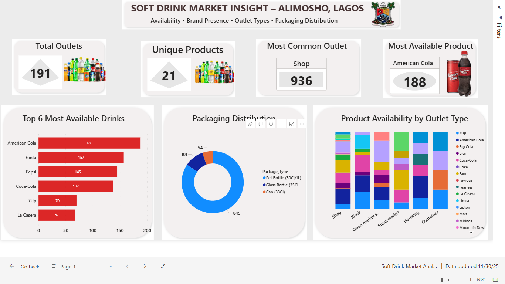

👋 Hi, I’m Ajayi Oluwaseyi

I’m a Data Analyst with a foundation in Psychology, combining
human-centered reasoning with analytical precision.
My background helps me translate complex datasets into business-ready insights that reflect
real customer behavior, motivations, and decision patterns.
I specialize in building dashboards, automating analysis, and uncovering insights that drive
measurable business impact and smarter decisions.
Portfolio Projects
🏢 Tenant Retention Optimization | Power BI

A retention intelligence dashboard for a real-estate company analyzing tenant churn,
satisfaction, and lease renewal patterns.
The project helps property managers identify high-risk tenants, understand factors driving
dissatisfaction, and forecast revenue at risk.
It supports proactive decision-making with measurable retention interventions and operational
improvements.
🔗 View on GitHub
🥤 Soft Drink Market Insight – Alimosho, Lagos | Power BI

A full market-mapping and distribution intelligence dashboard built from field survey data.
The report uncovers product availability, brand dominance, packaging preference, outlet
performance, and geographical hotspots across Alimosho.
It provides actionable insights that help distributors optimize re-supply frequency, improve
stock reliability, expand into underserved coldspots, and tailor packaging strategy by outlet
type.
🔗 View on GitHub
🏨 Airbnb NYC Market Analysis | Power BI

A market intelligence dashboard analyzing price patterns, occupancy behavior, host
performance, and neighborhood competitiveness across NYC.
This project empowers property owners and investors to make pricing decisions, maximize
occupancy, and identify high-performing locations.
It reveals revenue opportunities, booking patterns, and neighborhood-level demand insights.
🔗 View on GitHub
📦 Excel Backlog Dashboard | Excel

An operational performance dashboard tracking order volume, backlog trends, delivery
efficiency, and driver performance.
The analysis helps logistics teams reduce delays, identify bottlenecks, and optimize
workforce allocation.
It also highlights daily fluctuations, enabling leadership to improve SLA compliance and
customer satisfaction.
🔗 View on GitHub
🧮 Customer Analytics (SQL)

A complete SQL-driven analysis covering customer segmentation, behavioral trends, churn
patterns, and revenue movement.
The project identifies high-value customers, churn hotspots, and behavioral clusters that
inform marketing strategy and retention actions.
It enables data-driven decision-making for acquisition, retention, and lifetime value
optimization.
🔗 View on GitHub
📈 Customer Cohort & Retention Analysis | Power BI

A multi-layer cohort dashboard analyzing customer lifecycle, retention curves, RFM segments,
and long-term engagement behavior.
The insights help businesses understand repeat purchase patterns, identify high-value cohorts,
and improve retention programs.
It supports strategic decisions around customer reactivation, loyalty design, and LTV growth.
🔗 View on GitHub
⚙️ Skills & Tools
Analysis & Visualization:
Microsoft Excel (Advanced), Power BI (DAX, Modeling, Reports), Data Storytelling, Dashboard Development
Databases:
MySQL (Data Querying, Joins, Window Functions, Aggregations), PostgreSQL
Data Analytics:
Data Quality Assurance, Data Validation, Data Modeling, KPI Measurement, Customer Behavior Analysis
(pattern detection, purchase drivers, retention signals), Advanced Segmentation (RFM Segmentation, cohort grouping,
demographic/behavioral clustering), Trend Analysis, Insight Generation for Strategic Decision-Making
Programming:
Python (Pandas, NumPy, Scikit-learn, Seaborn, Matplotlib), Data Cleaning, Exploratory Data Analysis (EDA)
Soft Skills:
Problem-Solving, Critical Thinking, Effective Communication, Data-driven Decision Making,
Team Collaboration, Attention to Detail, Analytical Reasoning